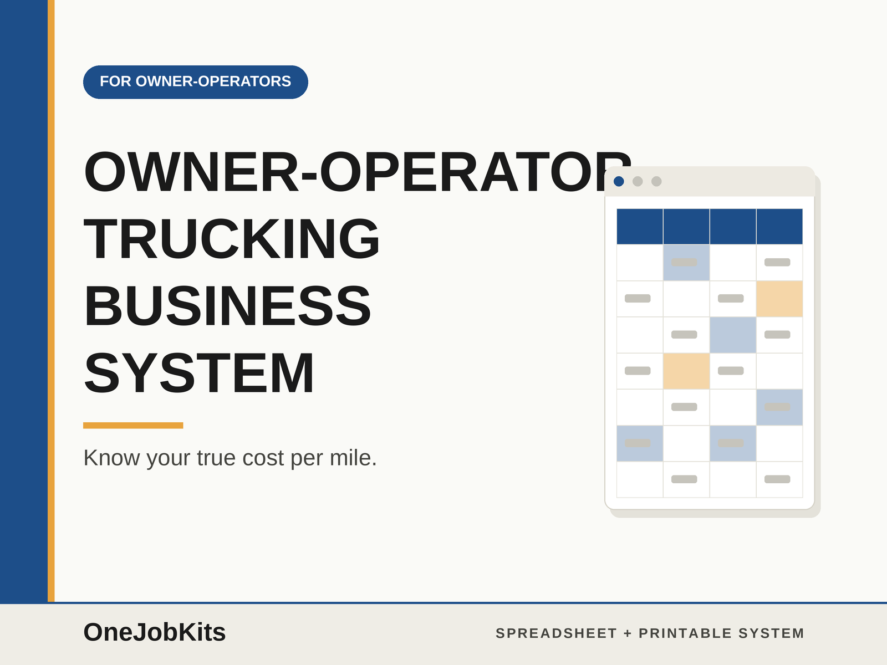

OneJobKits · Kit #10
Trucking Authority & Profit System — owner operator trucking spreadsheet

Most people searching for an owner operator trucking spreadsheet are asking one question: what did that load pay? A real trucking business has harder questions. What is your true cost per mile? Is your IFTA paperwork ready for the quarterly filing? And if a DOT new-entrant audit letter arrived tomorrow, could you hand over complete driver, maintenance and safety files without a panic?
This page gives you the first answer free: the one-sheet True Cost Per Mile calculator. Below it is the full system built around that number — an 11-tab profit workbook, the IFTA fuel & miles log, a 40-page DOT audit binder, and the new-authority startup checklist — built for one-truck and small-fleet operations that do their own paperwork. It is a record-keeping and organisation system only: not tax, legal or regulatory advice.
Free download — start with the True Cost Per Mile Calculator
The True Cost Per Mile Calculator is a single spreadsheet sheet: enter your fixed costs, variable costs and miles, and it returns your break-even cost per mile and the minimum rate per loaded mile you need — the number every load decision should be measured against.
Download the free True Cost Per Mile Calculator (Excel)Get it on Gumroad instead
What the calculator does not do: it knows your number for one quiet moment. The full system below keeps it true load by load — every load's profit against that break-even, registers that roll into monthly and quarterly dashboards, the IFTA records, and the audit files — so the number stays honest as costs move.
What's inside the full system
- Profit workbook (spreadsheet, 11 tabs) — START HERE setup · Truck & Business Setup (your fixed and variable costs) · Cost Per Mile — break-even and target rate per loaded mile, calculated · Load Log & Profit — 100 loads; rate, loaded and empty miles, fuel and fees become profit per load and per mile · Fuel Log (200 rows) · Expense Register (200 rows) · Revenue Register (200 rows) · Monthly Dashboard — net revenue, fuel, expenses, net and net per total mile, filled by formula · Quarterly Summary · Tax Set-Aside Planner — record what you decide to set aside each quarter, organised by due date · New Authority Tracker — 18 steps with status, dates and costs
- IFTA Fuel & Miles Log (spreadsheet, 3 tabs) — instructions, the log itself (fuel and miles by state), and the quarterly summary calculated from your records; tax rates are your inputs, never pre-filled
- DOT Audit Binder (fillable PDF, 40 pages, 1,541 fields) — sections A–E: the complete new-entrant file structure — driver qualification files, vehicle maintenance organisers, hours-of-service records, drug & alcohol program documentation shells and the accident register — plus an annual review sheet
- New Authority Checklist (fillable PDF, 8 pages, 196 fields, 36 steps) — the plain-English startup sequence from forming the business and the EIN through USDOT/MC, UCR, IRP/IFTA, BOC-3, insurance filings, ELD and the drug-testing consortium
- Worked example file — the profit workbook filled with a fictional one-truck operation's full quarter (shown below), so you see the finished system before you build your own
- Fleet tier ($229) adds: the Fleet Rollup workbook (4 tabs) — unit-level P&L, fleet rollup and quarterly fleet summary for up to 10 trucks
A filled example — so you can see the finished thing
The kit's own worked example follows Prairie Star Transport LLC, a fictional one-truck operation run by Sam Carter, through Q1 2026. The business is invented; every figure below is the example file's own register data:
| From the example file | The numbers, as logged |
|---|---|
| First load, PS-1001 | Kansas City, MO → Dallas, TX — rate $2,310 · 690 loaded miles + 95 empty · $478 fuel logged against the load |
| The quarter's Load Log | 14 loads · $21,695 in rates · 6,855 loaded miles + 1,085 empty miles — about $3.16 average rate per loaded mile |
| Fuel Log | 14 stops · 1,538.7 gallons · $5,950.11 at the logged prices — every stop with state, town, gallons, price and odometer |
| Truck & Business Setup | Fixed costs as entered: $1,850 truck payment + $425 trailer + $1,380 insurance per month; variable assumptions 6.4 MPG at $3.89/gallon; 12% empty miles; 15% margin target above break-even |
| Tax Set-Aside Planner | A 20% set-aside percentage the owner chose, tracked against the usual federal due dates — $400 recorded as actually set aside for Q1 (records only; a CPA sets the amounts) |
That is what "running on your number" looks like: the break-even from setup, every load judged against it, and the quarter's records already in the shape the filings and the audit ask for.
Who it is for
New-authority owner-operators and owners of 2–10 truck fleets who do their own paperwork and want profit numbers and audit files they can trust: one truck end to end on Standard, up to ten units on Fleet.
Who it is not for
Company drivers (your carrier handles this), anyone wanting tax filing or tax advice, and anyone wanting a guarantee of passing an audit. This organises your records; it does not file anything and it does not promise an outcome.
Questions buyers ask
- How do I find my true cost per mile?
- That is the question this system is built around. You enter your fixed costs (payments, insurance, permits, subscriptions) and variable costs (fuel price, your truck's MPG, maintenance and tyre rates), plus your planned miles and empty-mile share. The Cost Per Mile tab returns your break-even cost per mile and the target rate per loaded mile at the profit margin you choose — a number, not a feeling. The free calculator on this page is the same one-sheet version.
- Does it file my IFTA for me?
- No. The IFTA log organises your fuel purchases and miles by state, quarter by quarter, in the shape the quarterly filing asks for, and its summary calculates from the rates and records you enter — tax rates are never pre-filled, because jurisdictions set and change them. You still file; the log makes sure the numbers you file from are complete and findable. Verify current requirements with your base-state agency.
- Will the audit binder guarantee I pass a DOT new-entrant audit?
- No — nothing can promise that, and the binder says so. What it does is put the complete file structure in your hands — driver qualification, vehicle maintenance, hours of service, drug & alcohol program documentation and the accident register, 1,541 fields across 40 pages — so that if the letter arrives you hand over complete, organised files instead of panicking. What your records actually say is up to you.
- I am starting a new authority — where do I begin?
- With the startup sequence: the 36-step New Authority Checklist print (USDOT/MC, UCR, IRP, IFTA, BOC-3, insurance filings, ELD, drug-testing consortium — each with what it is and where you do it) and the 18-step New Authority Tracker tab in the workbook, which holds status, dates, costs and account numbers for each step. The example file shows a fictional operation's startup steps already worked through.
- Excel or Google Sheets?
- Both are covered: the profit workbook and the IFTA log are spreadsheets that open in Excel and Google Sheets, and the kit includes the Google Sheets setup instructions. The audit binder and checklist are fillable PDFs.
- One truck or a small fleet?
- Standard runs one truck end to end — cost per mile, load profit, registers, dashboards. The Fleet tier adds the Fleet Rollup workbook: unit-level profit & loss, a fleet rollup and a quarterly fleet summary — up to 10 trucks side by side, so you can see which unit earns and which one eats.
- What does the free calculator cover, and what does the full system add?
- The free calculator is one sheet: your costs and miles in, break-even cost per mile and minimum rate out. Knowing your number is step one. The full system runs the business on it — load-by-load profit, fuel and expense registers feeding monthly and quarterly dashboards, the IFTA log, the tax set-aside planner, the audit binder and the new-authority trackers.
Prices
Standard: $179 · Fleet: $229 — one-time payment, digital download. No subscription; the files are yours.
Can't find the kit you need?
We build it. Ask us — first asker gets it at half the shelf price. Tell us the job at onejobkits.com and we will build the kit for it.
Related kits
Please know: this is a record-keeping, calculation and organisation system only — not tax, legal, or regulatory advice. IFTA and IRP figures are calculated from the rates and records you enter; verify current requirements with your state agencies and your CPA. It files nothing and guarantees no audit outcome. The worked example is fictional (Prairie Star Transport LLC and Sam Carter are invented, and the example file says so).